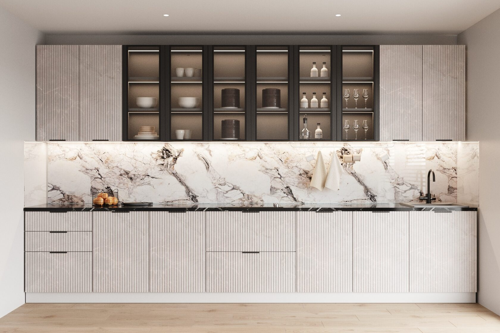

Первый Интерьерный · Санкт-ПетербургКухня.
Кухня.
По вашим размерам.
Кухни и корпусная мебель на заказ в Санкт-Петербурге. Подберём планировку, материалы и наполнение под ваше помещение.
Рассчитать кухню
ПРИМЕРЫ РЕШЕНИЙКухни.
Кухни.
В разных решениях.
Рассмотрите сочетания фасадов, расположение техники и организацию хранения. Выберите близкий вариант, а размеры и комплектацию обсудим для вашего помещения.
Рассчитать кухню